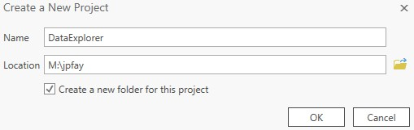
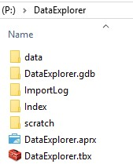
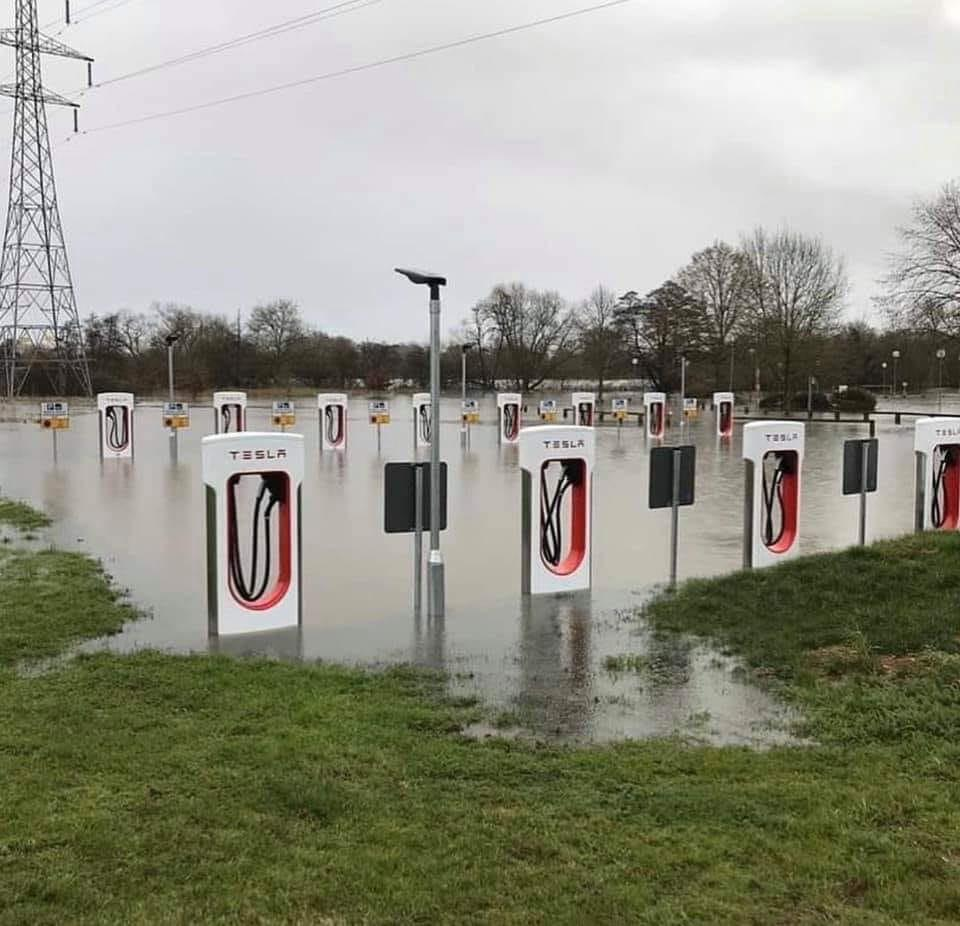

In this exercise we'll introduce ourselves to ArcGIS Pro - the industry standard GIS application - and use it to explore various spatial datasets that might be useful in our analysis. In addition to a quick tour of the ArcGIS Pro (or "ArcPro") software, we'll cover topics such as creating a proper workspace structure for GIS analyses, the various types and formats of spatial data, and tips for finding, acquiring, and managing spatial datasets.
→ For this exercise, we'll use NSOE lab machines with our class drives mapped. (Recall the login_790.bat script we created...)
I realize we'll be packing in a lot, so don't worry if some key points don't lodge in your head the first time hearing them. My intentions are to record this lesson so that you can go back to the class recording and review anything you want.
When you first start ArcGIS Pro, you'll be asked to sign in. This step both checks out an ArcGIS Pro license and links the software to your ArcGIS Online account.
Enterprise login option. nsoe.maps.arcgis.com, as that is the URL of our ArcGIS Online Portal. Click continue.<netID>_790) and password. Each time you use a new NSOE machine and create a new ArcGIS Pro session, you may need to go through this process.
This will associate ArcGIS Pro with your NSOE AGOL account. Alternatively, you can sign into your Duke AGOL account by entering
dukeuniv.maps.arcgis.comas your Enterprise URL and then use your NetID and password to log in.
ArcGIS Pro is project based meaning you create a workspace for each GIS project you tackle. This workspace will hold all the data, tools, and the project file itself. You initialize your project workspace first by selecting a template (any will be fine for now), and then creating a project folder.
Select Map from the New Blank Templates options.
Name your new project "DataExplorer" and place it in your M:\<netID> drive (or whatever you've selected as your mapped class drive). Keep the "Create new folder" option checked.

If you navigate to your M:\<netID> folder (same as yourP: drive), you'll now see a folder called DataExploration . This is our Project Root Folder and will contain everything related to our project. Within it you'll see a few new folders and files saved there.
- The
DataExplorer.aprxfile is the ArcGIS Pro project file.- The
DataExplorer.tbxfile is the ArcGIS Pro toolbox file, which will hold any models you create.- The
DataExplorer.gdbis an ArcGIS File Geodatabase, used to store spatial data.- The
ImportLogandIndexfolders are for internal record keeping.* → It's best not to touch any of the files in the
DataExplorer.gdb,ImportLog, andIndexfolders...
We'll want to create a few new folders in our Project folder, these are a data folder used to store data for our project, and a scratch folder to hold the gobs of intermediate or temporary files we are likely to make in our analyses.
P:\DataExplorer) and create a new subfolder called data. scratch.In the end your workspace should look like this:

We are now ready to start adding and viewing data.
We'll now grab some datasets to view in ArcGIS Pro. We'll start with those mentioned by Luke Hellgren from MJB&A.
Open up the MJB&A slide deck and navigate to slide 6.
Click on the link for Federal Highway Administration (FHWA)Highway Performance Monitoring System.
2017 and North Carolina. Save the resulting zip file to your data folder created above.In ArcGIS Pro, on the left side is the Catalog Pane which lists various items you can access. Locate the Folders selection and within that, you'll see your DataExplorer folder, the data folder within that, and the NorthCarolina2017.shp shapefile within that. (If not, try right-clicking on the data folder and select Refresh).
NorthCarolina2017.shp file onto your Map.Play around with your map.
Zoom in and click on a feature in the roads dataset. This opens up a window showing the attributes for that feature. What is the Route_Name of the feature you selected? To find out what these attributes mean, we look at the metadata associated with the dataset, for which Luke kindly provide a link in his presentation.
We will review a number of other ways you can interact with these data in class...
Google NC DOT GIS data. Explore your results, looking for downloadable GIS files.
Download some files, e.g. the ones here.
Explore these files in ArcGIS Pro.
Navigate to: https://hifld-geoplatform.opendata.arcgis.com/
Search for data that might be relevant:
Note you can filter the results, e.g. Content type = "Feature Layer"
Download the data as in File Geodatabase format (to explore this format vs shapefile).
Explore the data in ArcGIS Pro.
More and more data are being stored in formats directly accessible by ArcGIS Pro (vs having to download and open).
In ArcGIS Pro's Catalog Pane, select the Portal tab, then select the "All Portal" icon (the basic cloud icon: ☁️ ). This allows you to search a vast collection of datasets.
In the search box, enter ev charging. Hover over the results for more info on each.
ev charging NC ev charging type:featureYou can also perform these searching within ArcGIS Online...
Now switch to from "All Portal" to the cloud icon with a small green book - ESRI's Living Atlas.
transmission type:feature in the search term.A fuller description of the Living Atlas is here: https://livingatlas.arcgis.com/en/
Open MJB&A's online tool: https://mjb-a.maps.arcgis.com/apps/webappviewer/index.html?id=06a73cb31d014f4f8270a6c74a576fc4
arcgis.com in the name. Hmm...Open up your ArcGIS Online web site: https://nsoe.maps.arcgis.com
Search AGOL for the sites ID value: 06a73cb31d014f4f8270a6c74a576fc4
lukehellgren1 !Back in ArcGIS Pro, in your Portal search box, enter: NC owner:lukehellgren1 type:feature
Search ArcGIS Portal for gas station NC
owner:nconemap to your search if you fail to find it.Open up the Layers properties (right click it in the Map's table of contents and select Properties)...
Select the Source tab on the left. On the right, you'll see a URL...
Open this URL in your browser...
At the top of the web site (called an ESRI REST endpoint) you'll find the path leading to this service. Click the services link...
This reveals many other services hosted by the same server; you might find other useful datasets there.
You are welcome to use the sites below or find your own.
Let the data we downloaded inspire you and just jot down what you might want to calculate. For example:
X and YX that fall within Y km of Z
